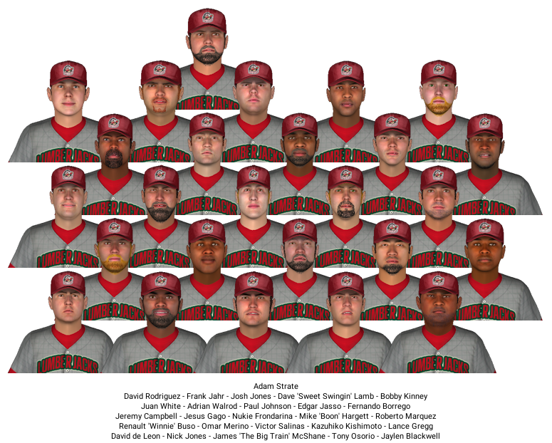

The Pennant Races Come Home
Ernie Bewell and Big Earl debate the August Division Challenges and put Earl’s pennant-race forecast on the record.
 Experiencing Action Baseball
Experiencing Action Baseball

ABC Western Division
49–72 · 20 games back · Portland Grounds
The latest final on August 19 was Philadelphia 3, Portland 1.
Ernie Bewell and Big Earl debate the August Division Challenges and put Earl’s pennant-race forecast on the record.
Special Coverage. This pre-simulation guide preserves the standings, schedule and questions as they stood before play on August 20. All August 20–30 matchups are scheduled, with…
| Season | Franchise | W–L | Finish |
|---|---|---|---|
| 1980 | Portland Lumberjacks | 79–83 | Regular season |
| 1979 | Portland Lumberjacks | 73–89 | Regular season |
| 1978 | Portland Lumberjacks | 94–68 | Tournament |
| 1977 | Portland Lumberjacks | 76–86 | Tournament |
| 1976 | Portland Lumberjacks | 92–70 | Tournament |
| 1975 | Portland Lumberjacks | 79–83 | Regular season |
| 1974 | Portland Lumberjacks | 86–76 | Tournament |
| 1973 | Portland Lumberjacks | 64–98 | Regular season |
| 1972 | Portland Lumberjacks | 76–86 | Regular season |
